JIRA Integration
Using JIRA Without Using JIRA
by Mike Leonard
Who am i?
- Software Developer - Oracle, Java, XML, Python
- Work for Fivium
- User (and lover) of Atlassian Products
Introduction
-
Overview of externally available tools
- Issue Collector
- APIs
- Webhooks
- Examples of how they can be used
- Automate where possible
- Q&A
JIRA Issue Collector
- Introduced in JIRA 5.1
- The easiest way to use JIRA without using JIRA
- Why is it good?
- Allows user feedback directly into JIRA from your system
- Save you creating your own feedback form functionality
- Avoids loosing information in emails
- User accounts not required but can be used seamlessly
JIRA Issue Collector

Configuration
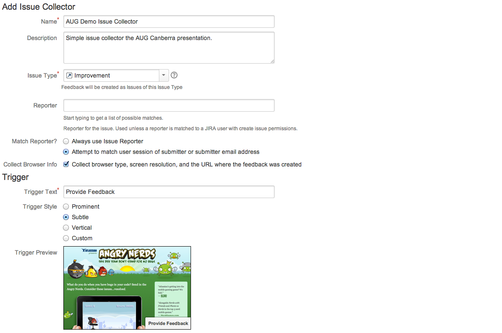
Configuration
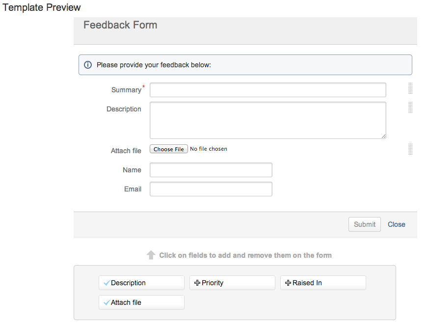
Embedding in a System
Just copy paste code to your web system
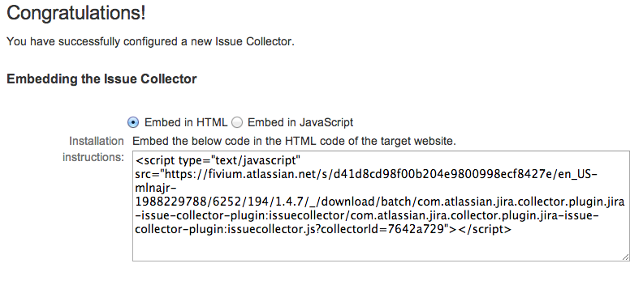
Example
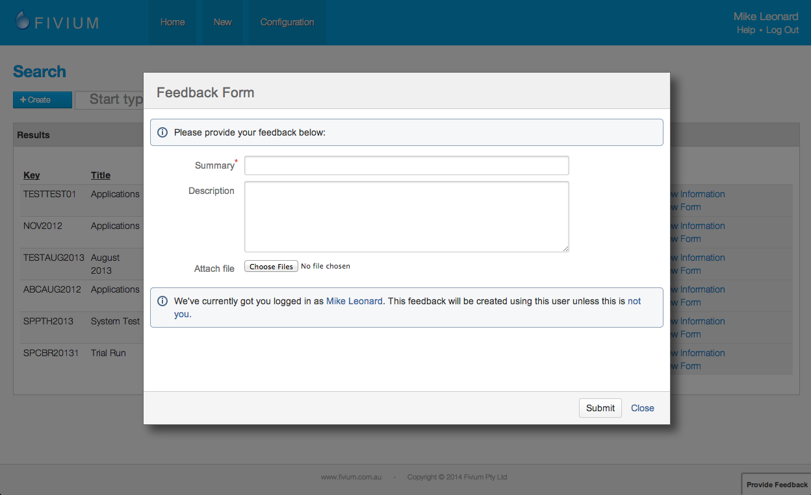
Example
Click hereAtlassian Use It
Its exactly how Atlassian include their own feedback
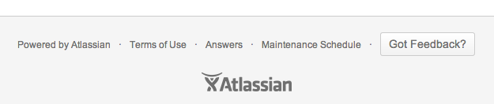
Atlassian Use It
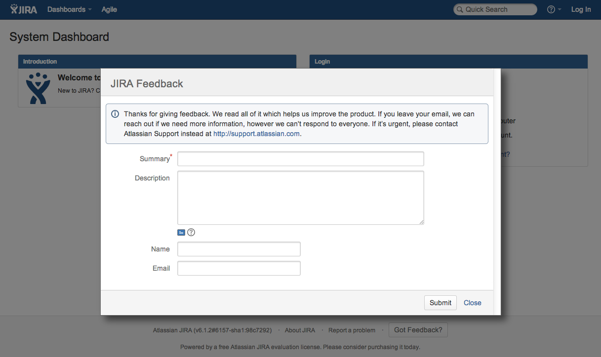
Web Service APIs
- Application Programming Interface
- Web services
- Why are they good?
- Pretty much an API available for every operation within JIRA
- Push/pull data
- Allows for full automation/integration
- SOAP/XML-RPC - Deprecated in JIRA 6.0
- REST - Introduced in JIRA 4.2
- Fantastic documentation
- Libraries available (official java, 3rd party .NET, python, etc)
- Available self hosted and on demand but need to be enabled
Example - Transitioning Workflow
- Push workflow
- Jenkins CI
- Replicating functionality found in Bamboo but its FREE!
- Free Jenkins plugin available
Example - Transitioning Workflow
Rapid Board - Workflow

Example - Transitioning Workflow
Jenkins Plugin
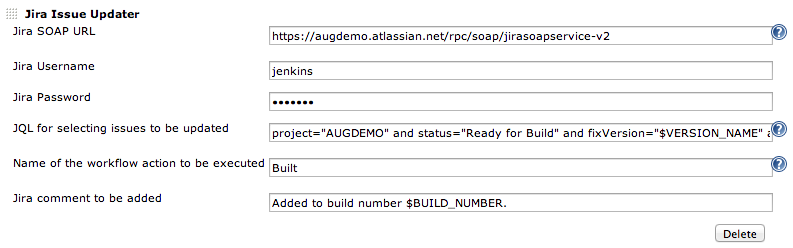
Example - Transitioning Workflow
Jenkins Comment in JIRA
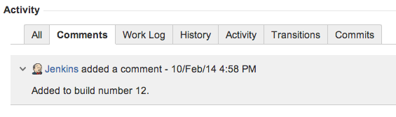
Example - Release Notes
- All information is in JIRA - automate the generation of release notes
- Release notes functionality does exist within JIRA - but its not great
- Open source
- GitHub
- Highly customisable via templates
- Designed for CI
Example - Release Notes
Provide custom changelog field in JIRA
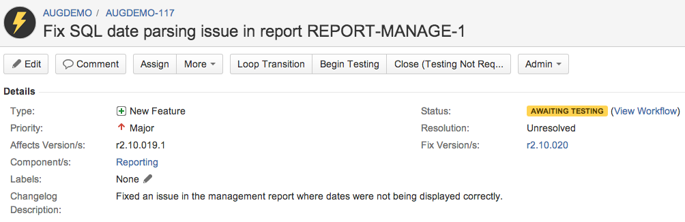
Example - Release Notes
Example of HTML output.
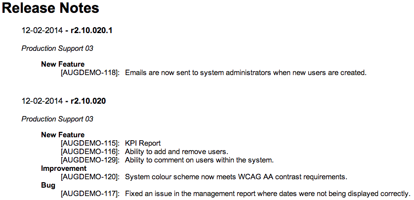
Example - Release Notes
Multiple formats.
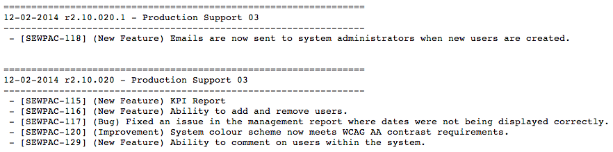
Example - Backend Workflow
- Use JIRA as a backend workflow engine
- Build an application (not in JIRA)
- Configure JIRA workflow
- Use the APIs to integrate
Webhooks
- Introduced in JIRA 5.2
- Send data to a URL
- Event driven
- Why are they good?
- No need to write complex integration code
- No need to poll for changes
- Available self hosted and on demand
- Configured through JIRA front end
Configuration
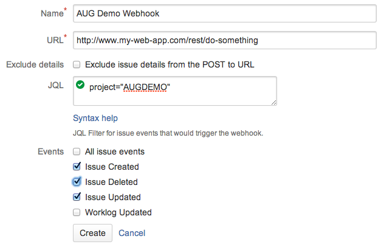
Example - Recruitment/Screening
- Using JIRA for recruitment
- Issue an assessment to an applicant for screening
- Not possible to create assessments within JIRA
- Use the web service API to record assessment scores in JIRA
Conclusion
- Issue Collector, APIs, Webhooks
- Easy to use and fully featured
- Limitless possiblities for integration
- Automate where possible
Any Questions?
Slides available at: